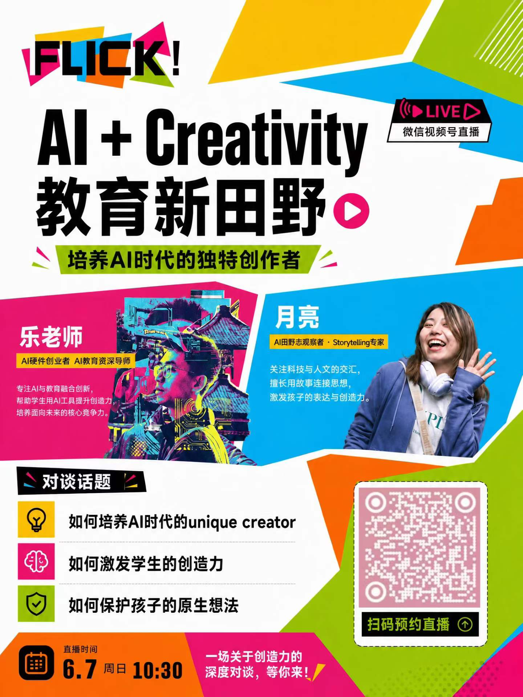
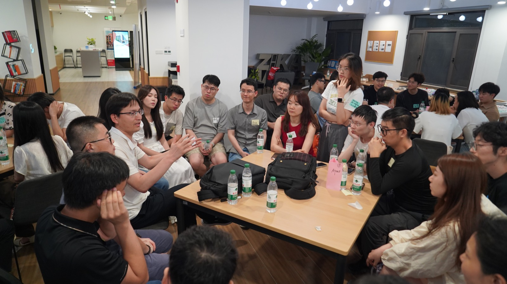
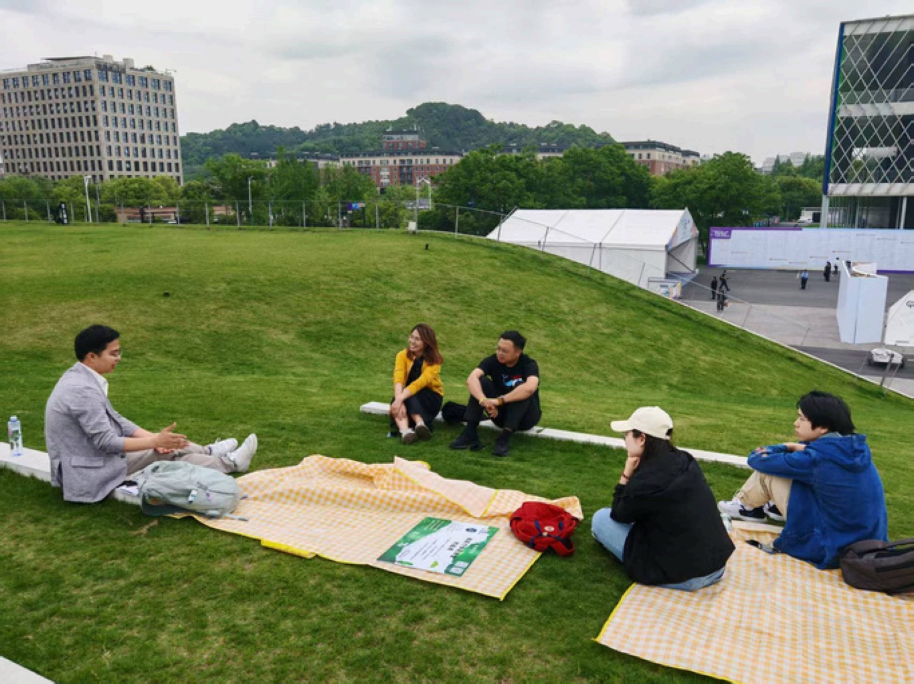
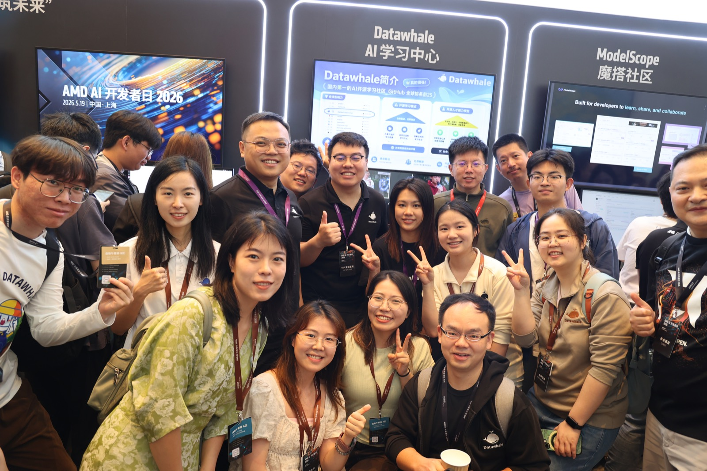
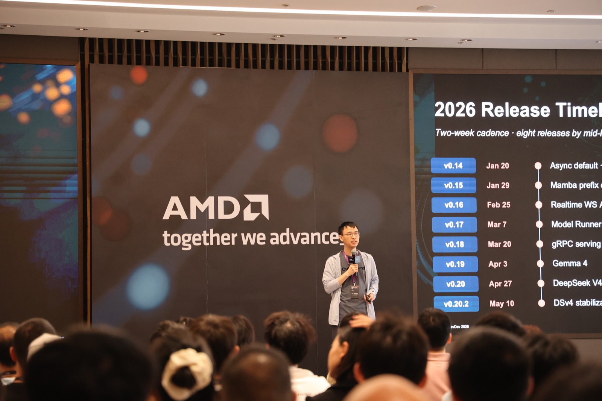
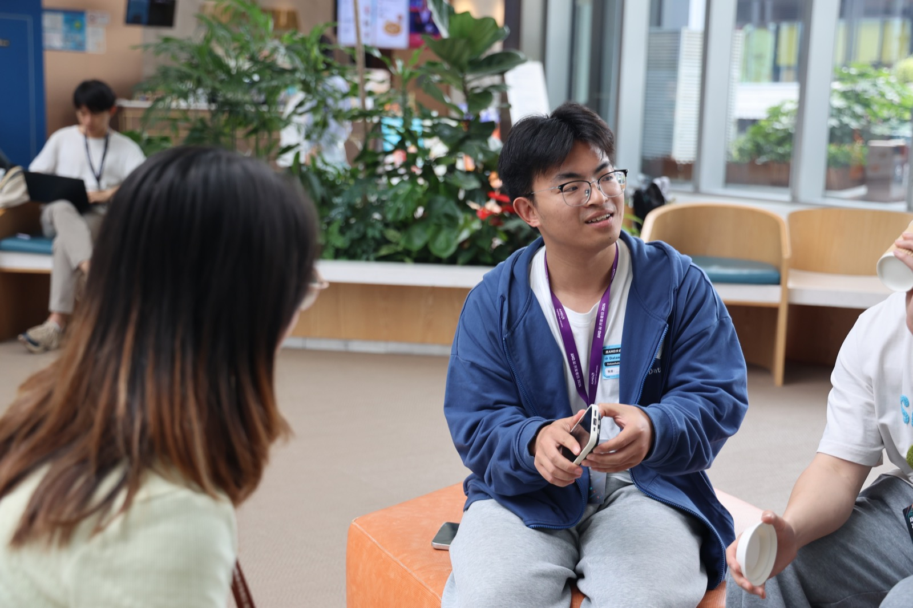

田野底色
创新教育、数字游民、社区生活。留下的是对人、关系、地方和生活选择的敏感度。
Becoming Journey
我从教育和社区走向 AI 创业现场。很多作品的源头，都在学校、黑客松、孵化器、播客、圆桌、工作坊和一次次线下见面里。
我最早进入的是大理的学校、家庭和数字游民社区。孩子、家长、老师、社区组织者、远程工作者都在重新安排自己的学习和生活。那时我还没有把它称为“内容研究”，只是反复练习一件事：在一个陌生场域里，听懂具体的人正在经历什么。
来到上海以后，AI 夏令营、青少年黑客松、创业孵化器和开发者活动把我带到更快的现场。产品还很早，团队还很小，很多判断发生在一场路演、一张白板、一次用户反馈里。默子、核蛋、小鹅、Tim 和更多年轻 builder，就是从这些现场里被我看见的。
后来，我开始自己组织现场。超级个体实验室、WAIC 派对、AI 跨界客厅、播客和圆桌，把研究者、创业者、教育者、设计师和开发者带到同一张桌上。很多采访对象、选题线索和人物稿，都是这些真实见面之后继续追问的结果。
新加坡出海、复旦 / UCL 工作坊、硅谷和欧洲 AI 教育访谈，让我开始把中国 AI 创业现场放进海外市场、平台团队和跨文化语境里看。这个页面里的作品，也是在这条路径上留下的痕迹。
创新教育、数字游民、社区生活。留下的是对人、关系、地方和生活选择的敏感度。
AI 营地、黑客松、孵化器、开发者社区。默子 / Redink、核蛋、小鹅和 AI 教育田野志都从这里生长出来。
超级个体实验室、Becoming计划、WAIC 派对、AI 跨界客厅。Tim 访谈、WAIC 复盘和系列主持都来自这些见面。
新加坡出海、硅谷科技人物、复旦 / UCL 工作坊、海外 AI 教育访谈，把材料推向跨市场和跨文化的现场。
在学校、社区、活动和孵化器里待得足够近，才知道一个故事真正从哪里开始。
年轻 builder、开源项目和早期团队身上，常常有最先出现的变化。
一场好访谈要等人把话说完整，也要知道什么时候继续追问。
出海、硅谷人物和海外教育访谈，让同一个 AI 议题出现新的尺度。
Selected Works
如果只停留十分钟，可以先从三件作品进入：开发者生态、开源 builder、硅谷科技人物。再往下翻，是更完整的作品书架。
从这里进入，会先看到我处理 AI 公司、产品、社区与技术变化的方式。

现场报道。把算力、模型、开源社区、开发者和青年研究者放进同一张生态图。

人物报道。写一个 00 后独立开发者如何把开源项目带进投资人与创业网络视野。

播客深访转长文。进入生成式 AI 创业者的工作节奏、技术冲击和生活转向。

硅谷科技人物稿。用公开材料整理华人技术领导者、公司机制和 AI 商业判断。

系列访谈。持续对谈国内、美国/硅谷和欧洲 AI 教育实践者。

现场组织与复盘。把研究者、创业者、投资机构和开发者社区带到同一个现场。
交互叙事实验。把访谈故事、创造者样本和互动体验整理成可回访的故事档案。
我在这篇里从教育和社区现场，走向更硬的算力、模型与开发者生态。
发生在 AMD AI 开发者日现场的生态报道。我把 AMD、苏姿丰、ModelScope、Datawhale、ROCm、开发者工作坊、开源贡献者、研究者社区和青年 builder 放在同一张现场地图里，试着写清楚算力、模型、开发者和社区在现场怎样互相牵动。
这篇让我更早看见 AI Native 一代如何从边缘位置长成 builder。
关于 00 后独立开发者默子和开源 AI 图文生成工具 Redink 的人物报道。我通过深度访谈、成长路径梳理和产品迭代细节，写一个 AI Native builder 怎样在 3 天内做出 4.5k+ GitHub Stars 的开源项目，并进入投资人、大厂和 AI 创业网络的视野。
我把“人如何成为”这个问题，带进了一场 AI 创始人长谈。
一次围绕 AI 创业、生成式图像、building in public、Sora 冲击、创业者工作方式与生活转向展开的深度访谈。我关心技术变速进入一个创业者身体、工作节奏和人生选择时，会留下怎样的痕迹。
这篇把我的视野推向硅谷科技人物、公司机制和华人技术领导者。
基于公开访谈、播客、演讲和母校座谈资料写成的硅谷科技人物稿。文章通过葛小川从物理博士、Facebook 工程师到 AppLovin CTO 的路径，理解华人工程师如何进入硅谷千亿美金公司核心决策圈。
这段经历让我开始把中国 AI 现场放进海外区域生态里观察。
我曾跟随 AI 企业出海到新加坡，围绕中国 AI 企业如何进入海外市场、如何理解东南亚区域生态、如何与全球平台和本地团队建立连接做过现场观察，并与 Manus、Google、TikTok 的新加坡团队有过较深交流和访谈。
这是我把访谈故事从文章里取出来，重新做成一个可进入的交互空间的尝试。
生命力博物馆来自我对创造者、教育者、年轻 builder 和社区人的持续访谈。它保存一个人被激活、长出作品、获得反馈、重新找到位置的具体过程。它也把我的内容能力往前推了一步：从写一篇人物稿，到设计一个可以持续收纳人物、关系和故事线索的交互叙事空间。
Field Marks
作品背后还有一些可以核对的经历：采写、主持、组织、研究和海外观察。它们说明我在哪里待过、做过什么、持续和谁对话。
早期在报社与融媒体中心完成新闻、时评、实地走访、专家联系和栏目策划。
从 0 到 1 发起超级个体实验室，聚集 AI 创业者、开发者、设计师和教育者。
WAIC 期间组织 AI 研究者创业者派对，围绕 Agent、Infra、多模态等议题形成 9 个圆桌。
通过播客、直播、活动和人物稿持续对话 AI 创业者、教育者、开发者与研究者。
共同发起 AI 教育田野志，公开节目覆盖中国一线实践、美国/硅谷与伦敦教育创新。
新加坡 AI 出海、硅谷科技人物研究、复旦/UCL 跨文化工作坊，构成下一阶段海外现场入口。
Series & Hosting
这里呈现的是连续性：我如何持续提出问题、邀请人进入对话、主持长谈，再从一次次声音和现场里找到新的内容线索。
共同发起并主持，持续围绕 AI 如何进入教育、学习、青少年创造力和未来学校场景进行对谈。访谈对象覆盖国内 AI 教育从业者、硅谷 AI 教育科技从业者和欧洲 AI 教育创业者。
一档关于“热爱、主动性与一个人如何成为自己”的深度访谈播客。我和共同发起人从教育、AI、创业、社区和生活方式的交叉处，寻找那些以热爱驱动、正在创造自己人生路径的人，并把长时间对谈转化为人物长文。








Method
前面的作品背后，有一套反复校准出来的工作习惯：先找人、关系、作品和具体场景。AI 可以帮我整理材料，判断仍然要从现场里慢慢长出来。
我会先找人、场景、作品、对话和具体动作。大判断来得太快，文字就会变滑。
写创始人、builder 或教育者时，我会保留他的关系、处境和犹豫，少把人压成概念。
犹豫、转向、试错、信号和警惕都值得留下。太顺的结论往往最不像我。
AI 可以帮我整理材料、检查声音、做版本分发，但它不能替我决定如何评价一个人、公开哪些关系、留下哪个判断。
我需要看见人，再慢慢写出判断。
我的内容方法来自人类学田野，也来自这两年和 AI 协作时反复校准出来的边界：AI 可以帮我收拢材料，现场、关系和判断仍然要由我自己承担。默子、Tim、AMD、WAIC、新加坡出海这些材料，都从这个位置长出来。
Archive Desk
原文、节目和活动记录收在这里，像编辑桌上的线索卡。读完前面的旅程，再从这里继续打开具体作品。